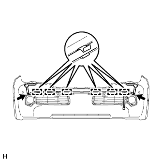
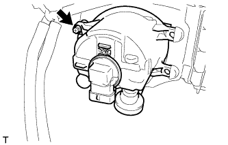
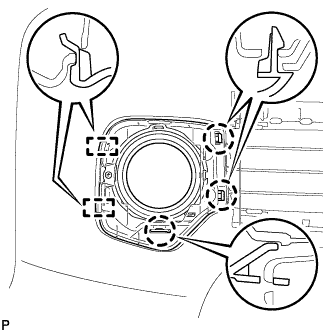

FRONT BUMPER > DISASSEMBLY |
| 1. REMOVE FRONT BUMPER EXTENSION MOUNTING BRACKET |
Remove the 2 screws and front bumper extension mounting bracket.
| 2. REMOVE FRONT SPOILER LH |
Turn the retainers 90° and remove the 2 lower front bumper retainers and front spoiler.
| 3. REMOVE FRONT SPOILER RH |
| 4. REMOVE TYPE 1 HEADLIGHT WASHER NOZZLE SUB-ASSEMBLY LH |
Extend the headlight washer nozzle by hand.
 |
Detach the 2 claws and remove the headlight cleaner washer nozzle.
| 5. REMOVE TYPE 1 HEADLIGHT WASHER NOZZLE SUB-ASSEMBLY RH |
| 6. REMOVE HEADLIGHT CLEANER HOSE |
|  |
Disconnect the headlight cleaner hose from the headlight washer actuator sub-assembly.
Detach the 6 clamps and remove the hose from the lower radiator grille.
| 7. REMOVE HEADLIGHT WASHER ACTUATOR SUB-ASSEMBLY LH |
Remove the bolt.
Detach the 2 claws and remove the headlight washer actuator sub-assembly.
| 8. REMOVE HEADLIGHT WASHER ACTUATOR SUB-ASSEMBLY RH |
| 9. REMOVE NO. 2 ENGINE ROOM WIRE |
w/ LEXUS Parking Assist-sensor System
Disconnect the 6 connectors.
Detach the 6 clamps and remove the No. 2 engine room wire.
w/o LEXUS Parking Assist-sensor System
Disconnect the 2 connectors.
Detach the 6 clamps and remove the No. 2 engine room wire.
| 10. REMOVE NO. 1 ULTRASONIC SENSOR (w/ LEXUS Parking Assist-sensor System) |
 |
Disconnect the connector.
Detach the 2 claws and remove the No. 1 ultrasonic sensor.
| 11. REMOVE NO. 1 ULTRASONIC SENSOR RETAINER (w/ LEXUS Parking Assist-sensor System) |
 |
Detach the 2 claws and remove the No. 1 ultrasonic sensor retainer.
| 12. REMOVE FOG LIGHT ASSEMBLY LH |
|  |
Remove the screw and fog light.
Disconnect the connector.
| 13. REMOVE FOG LIGHT ASSEMBLY RH |
| 14. REMOVE FRONT BUMPER HOLE COVER ASSEMBLY LH |
|  |
Detach the 3 claws and 2 guides and remove the front bumper hole cover.
| 15. REMOVE FRONT BUMPER HOLE COVER ASSEMBLY RH |
| 16. REMOVE LOWER RADIATOR GRILLE LH |
 |
Detach the 8 claws and remove the lower radiator grille.
| 17. REMOVE LOWER RADIATOR GRILLE RH |